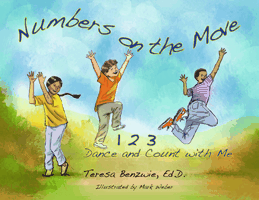

<body bgcolor="#FFFFFF" text="#000000" link="#0000FF" vlink="#CC0000" alink="#CC0000"><center><hr width="350" size="1" align="center" noshade>Young children learn by moving and dancing in this playful book for children ages two through seven<hr width="350" size="1" align="center" noshade><p><a href="https://cdcshoppingcart.uchicago.edu/Cart/ChicagoBook.aspx?ISBN=9781439903421&&PRESS=temple" target="_top">Buy this book!</a> | <a href="https://cdcshoppingcart.uchicago.edu/Cart/Cart.aspx?PRESS=temple" target="_top">View Cart</a> | <a href="https://cdcshoppingcart.uchicago.edu/Cart/Cart.aspx?PRESS=temple" target="_top">Check Out</a></p><p></p></center><!--none//--><h1>Numbers on the Move</h1>
<H2>1 2 3 Dance and Count with Me</H2>
<H2>Illustrated by Mark Weber</H2>
<h3>Teresa Benzwie, Ed.D.</h3>
<P>paper 1-4399-0342-5 $16.95, Apr 11, <FONT COLOR=#990033>Available</FONT>
<br>Electronic Book 1-4399-0343-3 $16.95 <FONT COLOR=#990033></FONT>
<BR> 32 pp
11x8.5
32&nbsp;color&nbsp;illustrations
</P><p><em>&quot;Move with the numbers, count to the beat. Clap your hands. Tap your feet. Count one two three four, with your Head Shoulders Elbows Hands Arms Hips Knees Feet!&quot;</em>
</p>
<p>Early childhood educator Teresa Benzwie believes that dance and movement foster imagination, which is essential to the learning process. Her philosophy&#151that creative movement helps children gain knowledge through the body&#151is incorporated in <em>Numbers on the Move</em>, an appealing and entertaining book that urges kids to dance, stretch, and move as they learn to count and play with numbers.
</p>
<p>Featuring playful, full-color illustrations, this book offers dynamic activities for children, who learn most readily from experience. For parents and teachers, Benzwie provides additional games and activities to try with children. Kids will develop a concrete awareness of numbers as they connect in deep, direct ways with their own expressive movement.
</p>
<BR>&nbsp;<h2>Reviews</h2>
<p><i>"This is a book that will bring immense joy to children while stimulating their imagination and creativity. It's the kind of education that could create a transformed society."</i> <br>&#151<b>Deepak Chopra</b>, author of <I>On My Way to a Happy Life</i>
<p><i>"</i>Numbers on the Move<i> capitalizes on children's primary mode of learning&#151joyous, lively movement&#151to help them master the real 'basics' of mathematics. Catch the beat with your child or student&#151and have fun!"</i> <br>&#151<b>Jane M. Healy, Ph.D.</b>, Educational Psychologist, and author of <i>Different Learners: Identifying, Preventing, and Treating Your Child's Learning Problems</i>
<p><i>"Teresa Benzwie's </i>Numbers on the Move<i> gives young children the opportunity to connect with the kinesthetic ways that they are already thinking and moving. I will use this with my young students."</i> <br>&#151<b>Katrina Toews</b>, Director, The Washington Ballet@THEARC
<p><i>"Teresa Benzwie has written a seamless, melodic intertwining of dance, movement and mathematic concepts, such as numbers, one-to-one correspondence, and counting backwards and forwards, which will captivate readers and listeners alike. With characters that represent the range of human diversity&#151from gender, race, and ethnicity to differences in physical abilities&#151all children will connect and relate to it. Each child will find someone who looks like him or her, leading to the universal appeal for this book"</i> <br>&#151<b>Jody L. Eberly, Ed.D.</b>, Associate Professor & Coordinator, Early Childhood Education, Department of Elementary and Early Childhood Education, The College of New Jersey
<p><i>"A good reminder about the value of movement in early-childhood education."</i>
<br>&#151<b><i>Kirkus Reviews</i></b>
<p><i>"[A] wonderful new addition to the list of books that have been used by educators to inspire movement and dance.... [A] practical and meaningful learning opportunity for young children. The book is beautifully illustrated by Mark Weber and depicts a broad diversity of girls and boys.... Anyone who teaches young children will find this book a great addition to their children’s literature collection."</i><br>&#151<b> <i>The Journal of Dance Education</i></b>
<BR>&nbsp;<H2>About the Author(s)</H2>
<P><strong>Teresa Benzwie</strong>, Ed.D., has earned graduate degrees in Early Childhood Education, Dance Education, and Clinical Social Work. She is a former kindergarten teacher and international presenter in the use of creative movement. Dr. Benzwie is a licensed clinical social worker in private practice at the Center for Creative Change and mentors Temple University dance students as part of the Teresa Benzwie Dance in Education Grant. She is the author of <em>A Moving Experience</em> (book and video), <em>More Moving Experiences</em>, and <em> <a href="2170_reg.html" target="_top">Alphabet Movers</a></em>.</P>
<BR><H2>Subject Categories</H2>
<p><A HREF="/tempress/children.html" TARGET="_top">Children's Books</a>
<BR><A HREF="/tempress/education.html" TARGET="_top">Education</a>
<BR><A HREF="/tempress/music.html" TARGET="_top">Music and Dance</a>
</p>
<p align="center"><a href="https://cdcshoppingcart.uchicago.edu/Cart/ChicagoBook.aspx?ISBN=9781439903421&&PRESS=temple" target="_top">Buy this book!</a> | <a href="https://cdcshoppingcart.uchicago.edu/Cart/Cart.aspx?PRESS=temple" target="_top">View Cart</a> | <a href="https://cdcshoppingcart.uchicago.edu/Cart/Cart.aspx?PRESS=temple" target="_top">Check Out</a></p><p><font face="Arial" size="1"><a href="copyright.html" onMouseOver="window.status='Web Copyright Policy';return true;" onMouseOut="window.status=''" title="Web Copyright Policy">&copy;</a> 2015 <a href="http://www.temple.edu" target="new" onMouseOver="window.status='Link to Temple University home page';return true;" onMouseOut="window.status=''" title="Link to Temple University home page">Temple University</a>. All Rights Reserved. http://www.temple.edu/tempress/titles/2121_reg.html</font></p>